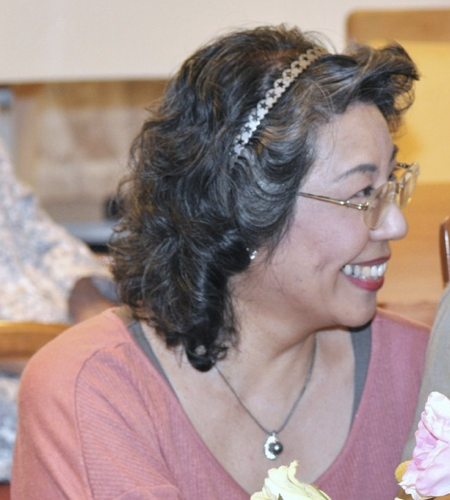

私の経歴を交えながら、音楽体操の生い立ちを紹介します。
？？歳の時にヤマハの講師になったのが、音楽を教える最初の仕事でした。当時は〜〜教室や〜〜の監督、〜〜を主に担当していました。先日、グレードを受けたがってる人のお手伝いで最近のグレードを見たけど、割りと当時と変わってなかったよ的な感じでアピールしてみたり。
結婚を機にそれまでやっていたヤマハの講師を辞めましたが、住んでいたマンションの一室をレッスン室として使い、同じ団地の子どもを対象にした音楽教室を始めました。でも今は子どもあんま興味ないんで軽く流す。
今は対象を大人にしていることと、グレードみたいな資格取りたい人手伝うよ的なアピールは入れてもいいかも。
神戸大学に行くきっかけとか。
神戸大学でこれこれ学んだとか。その後京都教育大の大学院でこれこれ勉強したとか。ソルフェージュや音楽教育、音楽史などにも興味あるぜカモン的なアピールしてみたり。
最初こういうことがあったけど、体操を入れてみたら簡単で楽しくて〜みたいな、音楽体操ができた瞬間のエピソードを披露
昔は子どもとか自分のスキルに興味があったけど、今は高齢者を中心に、音楽の力で生活を元気にしよう的なことに興味があるとか。音楽体操ができたきっかけとか。音楽体操にかける思いとか。
普段の活動で心がけてることとか。音楽体操や講師の活動を通して毎日がこんな風になったらいいな的なこととか。家で一人の高齢者を外に引っ張りだすぜ的なメッセージ込めれたらよい？
何だかんだで？？年続いてますとか、年間いくつのコンサートや講演やってますみたいに、数字出して人気ぶりをアピール
名古屋市生まれ
東京都品川区在住
yyyy年mm月 神戸大学・音楽教育専攻卒
yyyy年mm月 京都教育大学大学院・ピアノ科科目履修生修了
メンタルケア協会・精神対話士認定
ホールファミリーケア協会・傾聴講座及び認知症講座修了
元ヤマハ講師（ヤマハ演奏グレード４級、指導グレード3級）
参加型音楽体操コンサート、健康講座、傾聴講座等を通して、 認知症予防、及び独居老人の引きこもり防止に務める。
都内を中心に活動しており、現在は、東京都町田市町内会館、湘南地区の文化センター、藤沢の高齢者施設で、定期的に参加型音楽体操コンサートを行っている。
これまでに、東京都、神奈川県、愛知県、和歌山県、三重県、秋田県、大阪府で行う。
音楽体操みぃなの会主宰（載せる？）
音楽体操講師 中村嘉奈子
yyyy年mm月 音楽体操が終わった後の傾聴中の一時
町田市森野では、市の講座が終わった後も、自主講座として音楽体操教室を継続中
1983年生まれ。関西出身。
大学で音声認識に興味を持ち、大学院で本格的に障害者のための発声支援システムついて研究する。大学院卒業後、ドイツの研究室で1年間特別研究員として勤務する。
誰でも活躍できるという可能性をインターネットに見出し、ドイツでの研究期間が終了した後は、日本のIT企業に就職し、エンジニアとして勤務する。
2013年に父を亡くしたことをきっかけに、人生の終わりを考える終活に興味を持ち、2013年9月に終活初級カウンセラーの資格を習得する。
中村嘉奈子の音楽体操では、各種チラシの作成など、主にパソコンを使った裏方の作業を担当する。このホームページの保守、運用、管理も担当する。